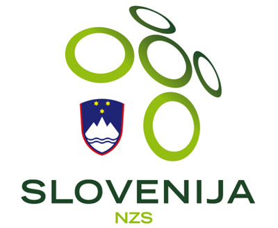

por Pedro Henrique B. N. Prado

Talvez a maior zebra europeia a disputar a Copa do Mundo de 2010, a Eslovênia chega a seu segundo Mundial (esteve também em 2002) depois de deixar pelo caminho seleções de mais tradição, como República Tcheca, Polônia e Rússia (rival da repescagem).
Uma das seis repúblicas que formavam a antiga Iugoslávia (junto a Sérvia, Montenegro, Croácia, Bósnia e Macedônia), a Eslovênia não costumava contribuir muito para as seleções iugoslavas. Apesar disso, toda a comissão técnica comandada pelo treinador Matjaz Kek é eslovena.
Desprovida de grandes craques internacionais (os maiores destaques jogam em times médios e pequenos de Alemanha e Inglaterra), a Eslovênia baseia seus trunfos na força do grupo. Nas eliminatórias, foram sete vitórias, dois empates e três derrotas.